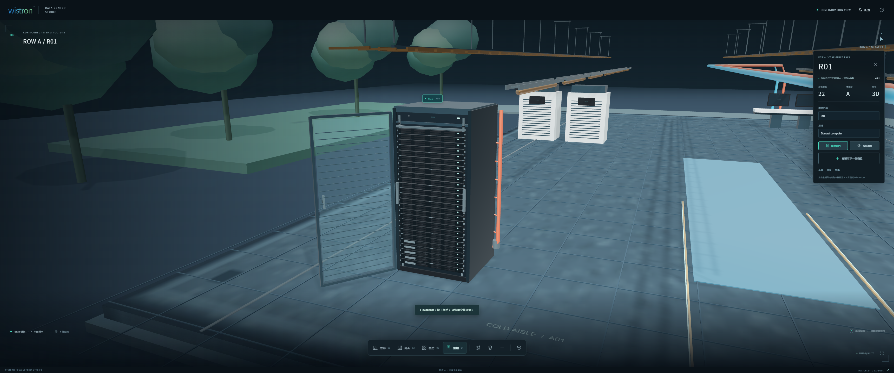
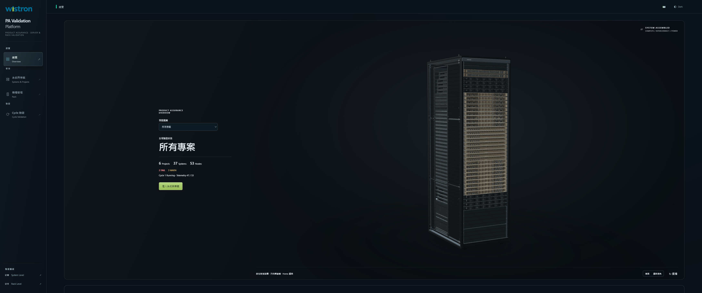
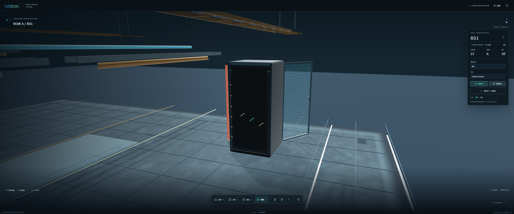
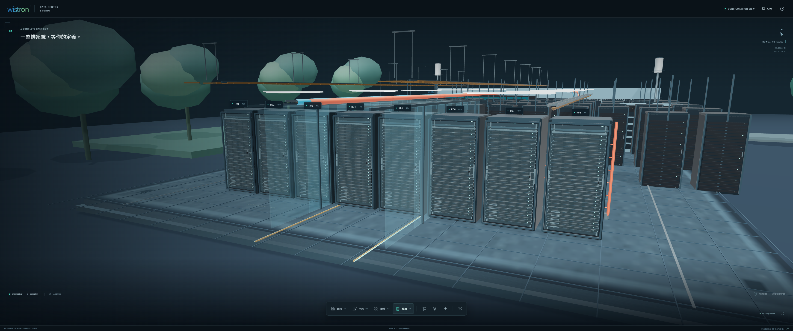
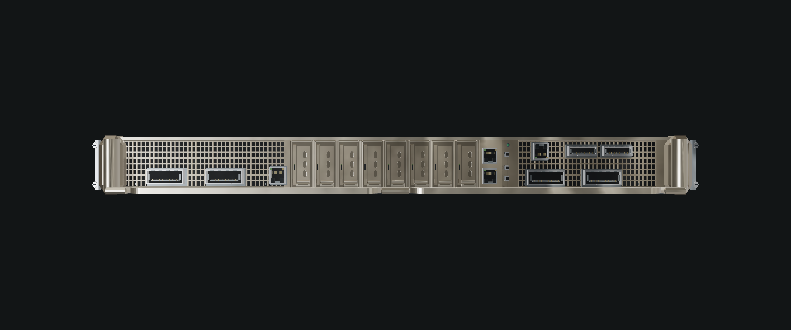
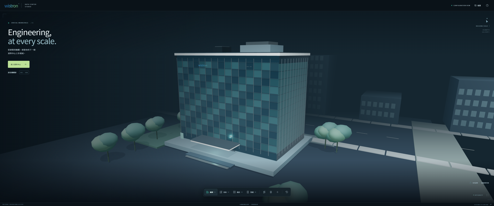
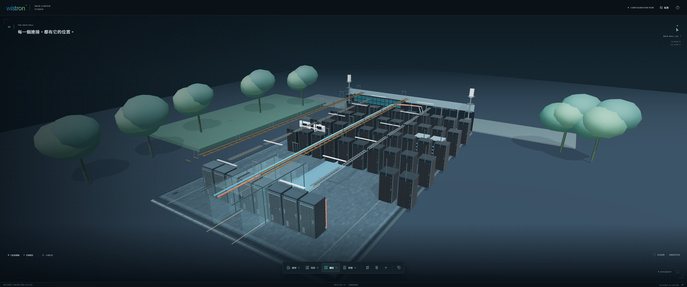

現況與參考資產
視覺證據圖集
本頁協助審核現有差距與 PA 的可保留品質。沒有 V2 新功能或建築重製成果。
左側／現況為本次以原始應用實際截圖；PA 圖片是 repository 保存的歷史產物，已檢查原圖與來源 hash，本次未重新渲染。相機、場景與光照不同，這是差距盤點，不能當成受控 A/B 或同條件畫質驗收。
Rack 造型與深度

現有 Rack：正面開門
機櫃內主要為重複水平面板。這是原應用的開門狀態，不是 V2 成果。
開啟 3440 × 1440 原圖 ↗
PA：完整 Rack
可觀察層次、金屬面板、固定件與設備面板。不同 camera／lighting，不作像素差異評分。
開啟 3440 × 1440 原圖 ↗ 上游來源 ↗
現有 Rack：背面
深色整體背板與簡化線路，尚非型號驅動的背面設備配置。
開啟 3440 × 1440 原圖 ↗
PA：背面檢視
背面 rail、深度、線纜與連接物，是移植需保留的視覺特徵。
開啟 3440 × 1440 原圖 ↗ 上游來源 ↗
現有 Rack Row
導覽到此為第 4／4 層，尚未形成連續的設備內部路徑。
開啟 3440 × 1440 原圖 ↗
PA：側面檢視
呈現框架與設備的深度關係；不能從畫面直接認定為 OEM 實際尺寸。
開啟 3440 × 1440 原圖 ↗ 上游來源 ↗L10 內部資產
板卡、液冷與前面板需要共同座標、語意層與材質／動畫契約。單獨載入 GLB 不代表已整合。

PA：液冷組裝
上游 Final RC 圖片。其報告仍明示 photographicAcceptance=false，不應把它說成攝影級認證。
開啟 3440 × 1440 原圖 ↗ 上游來源 ↗
PA：Bare board
新版 bare-compute-boards.glb 為約 25.5 MB，與現有舊單板 prototype 不同。
開啟 3440 × 1440 原圖 ↗ 上游來源 ↗
PA：Gold front
材質、port cages 與細部應連同光照契約保存；不以通用盒狀設備替代。
開啟 3440 × 1440 原圖 ↗ 上游來源 ↗現有建築與機房
總部與機房目前均為概念模型；沒有使用者照片可在此做真實建築逐項對照。

現有 HQ 概念外觀
通用玻璃量體與明顯低面數植物，不符合指定的石材立面、玻璃轉角、階梯式輪廓與自然植栽標準。
開啟 3440 × 1440 原圖 ↗
現有機房視角
可保留空間工作台作增量起點；尚未有實際場址／設備規格或多層 navigation contract。
開啟 3440 × 1440 原圖 ↗本次基準環境
Viewport 3440 × 1440，DPR 1；主 canvas 3440 × 1339。Chrome 131.0.6778.205，Windows ANGLE／NVIDIA RTX 4070。這些截圖不是完整 canvas 的 3440 × 1440 效能測試；未取得 FPS benchmark。